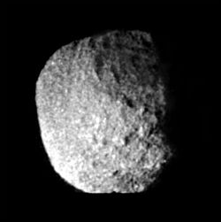

There are 16 known Neptunian satellites, all named after Greek water deities (except S/2002 N 5 and S/2021 N 1).
The biggest satellite - Triton was discovered just 17 years after the discovery of Neptune.
It is believed to be a dwarf planet caught by the gravity of Neptune, because of it's retrograde orbit.
Triton is similar to other moons like Ganymede, Europa, and Enceladus in that a subsurface ocean might exist under the surface.
All of the other satellites have an irregular shape.
More moons were discovered by Voyager 2.
The biggest of them is Proteus, whis is the biggest we know of with an irregular shape, larger than Saturn's Mimas, which is round.
Naiad, Thalassa, Despina and Galatea are within the rings of Neptune.
Larissa was the last discovered in 1989.
Since then eight more moons were discovered in 2002, 2003, 2013 and 2021.
Triton was discovered in 1846 by British astronomer William Lassell, just 17 days after the discovery of Neptune.
The discovery was relatively fast thanks to John Herschel writing to Lassell about the newly discovered planet, advising him to search for a satellite.
It wasn't until 1949 that a new moon was discovered by Gerard Kuiper - Nereid.
In 1981, Larissa was first observed when astronomers were observing a star occultation to detect Neptune's rings.
The Voyager 2 mission discovered five new moons - Naiad, Thalassa, Despina, Galatea and Proteus.
It also confirmed the existence of Larissa.
New irregular satellites were discovered in 2002 - Halimede, Sao, Psamathe, Laomedeia, and Neso
In 2013, Hippocamp was discovered from Hubble Space telescope images.
The last two moons - S/2021 N 1 and S/2002 N 5 - were confirmed in 2024.
Triton is named after the Greek sea god Triton, son of Poseidon, who is the Greek equivalent of the Roman Neptune.
The name was first proposed by Camille Flammarion in his 1880 book Astronomie Populaire, but was officially adopted many decades later.
Other moons followed the same rule of Greek water deities.
The general convention for irregular moons is to use names ending in -a for prograde satellites, names ending in -e for retrograde satellites, and names ending in -o for exceptionally inclined satellites.
This is the same as the convention for Jupiter's moons.
Generally, the satellites can be divided into regular and irregular.
It is the only planet that has a round moon in an irregular orbit, which means that all of the regular moons are irregularly shaped.

Proteus, the biggest irregularly-shaped moon of Neptune
There are 7 known inner moons orbiting around Neptune - Naiad, Thalassa, Despina, Galatea, Larissa, Hippocamp, and Proteus.
The biggest of them is Proteus, which has a size greater than that of Mimas, the smallest round satellite in the Solar System.
All but Hippocamp and Proteus are within Neptune-synchronous orbit.
The two innermost satellites, Naiad and Thalassa, orbit between the Galle and LeVerrier rings.
Despina is a potential shepherd of the LeVerrier ring.
Galatea orbits within Adam's ring.

Triton
Triton, the biggest satellite, was discovered just 17 years after the discovery of Neptune.
It is believed to be a dwarf planet caught by the gravity of Neptune, because of it's retrograde orbit.
Triton is similar to other moons like Ganymede, Europa, and Enceladus in that a subsurface ocean might exist under the surface.
It is similarly geologically active and features diverse regions shaped by cryovolcanism and tectonics.
The surface is covered with frozen nitrogen and has an atmosphere where clouds can form despite its relative thinness.
Nereid and Halimede
Of the irregular moons, apart from Triton, there are two other that are not part of any group.
Nereid is an irregular moon and the third largest with a high 0.751 eccentricity and an apoapsis seven times the periapsis.
The other irregular moon is Halimede, which has the second highest eccentricity at 0.521.
They orbit further than Triton and closer than the Sao group, with 5.5 and 16.6 million km respectively.
Nereid is a prograde moon with a relatively low inclination, while Halimede is retrograde, with an extreme 119.6°,
The Sao group consists of moons with a prograde orbit.
These moons are Sao, S/2002 N 5, and Laomeda.
Their semi-major axes are in the range of 22.2 to 23.5 million km, their inclinations between 36.9° and 50.2°, and their eccentricities between 0.3 and 0.43.
The Neso group consists of the most distant moons of Neptune.
They orbit in retrograde and include Psamathe, Neso, and S/2021 N 1.
Their semi-major axes are in the range of 47.6 to 50.7 million km, their inclinations between 127.8° and 135.2°, and their eccentricities between 0.41 and 0.5.
Triton has been visited by the Voyager 2 mission, which made a flyby of the Neptune system as a whole.
The probe discovered the presence of cryovolcanism and obtained data about the composition of Triton.
The observations have been limited, so Triton has remained a target for future missions, including Trident and Neptune Odyssey by NASA, and Shensuo by CNSA (Neptune and Triton are only considered for a flyby, since the mission's target is the heliosphere's tail)
Proteus and Larissa have been photographed up close, and five new moons have been discovered.
External links